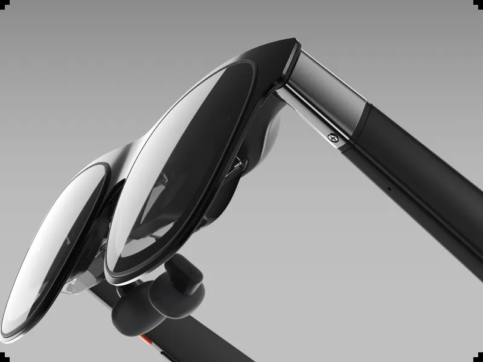
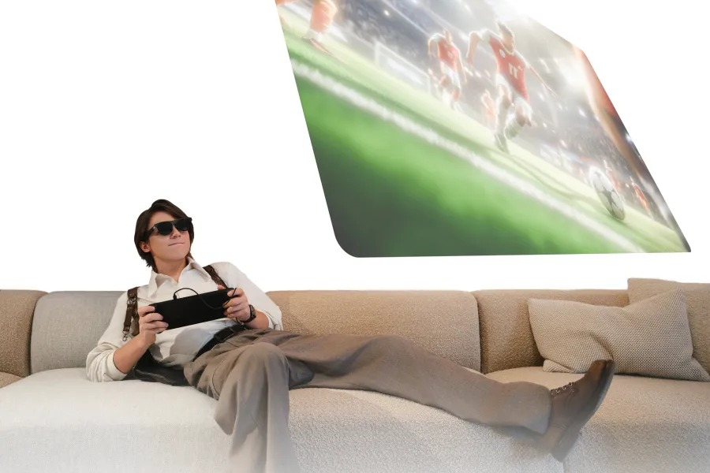

엑스리얼 원 프로 구매 전 체크 5가지 — 72만 원 AR 글래스, 실제 구매평 33건을 읽어봤다
시야각 57도 대화면이지만 해상력은 1080p에서 멈춥니다. M·L 사이즈, 배터리 없음, 도수 렌즈, 별매 허브까지 — 공식 사양과 쿠팡 구매평 33건으로 사기 전 확인 순서를 정리했습니다.
목차 · 11개 장

이미지 출처: XREAL 공식 사이트(xreal.com)
들어가며 — 72만 원짜리 '화면 안경', 무엇이 달라졌나
AR 글래스는 오래전부터 '몇 년 뒤에 쓸 만해질 제품'으로 불려 왔습니다. 그런데 엑스리얼 원 프로(XREAL One Pro)는 그 평가가 조금씩 바뀌는 지점에 서 있습니다. 시야각 57도, 최대 120Hz, 보스 튜닝 사운드, 무게 87g. 숫자만 보면 지난 세대와 다른 제품처럼 보입니다.
문제는 이 숫자들이 '무엇을 할 수 있는가'를 말해 주지 않는다는 점입니다. AR 글래스에서 실제로 갈리는 것은 해상도나 시야각이 아니라, 내가 보려는 콘텐츠가 무엇인지, 내 기기가 화면을 내보낼 수 있는지, 내 눈에 맞는 사이즈가 있는지입니다.
이 글은 제품을 빌려 써 본 후기가 아닙니다. 제조사 공식 사양과 쿠팡 실제 구매평 33건을 정리한 '구매 전 판단 자료' 입니다. 광고 문구에서 잘 다루지 않는 조건(사이즈·전원·도수·별매품)을 먼저 확인하실 수 있게 순서를 잡았습니다.
한 줄 결론부터
엑스리얼 원 프로는 'TV를 대신하는 제품'이 아니라 '화면을 들고 다니는 제품' 입니다.
- 눈앞에 57도 시야각으로 1080p 화면을 띄우고, 고개를 돌려도 화면은 공간에 그대로 붙어 있습니다(3DoF).
- 무게 87g, 배터리 없음. USB-C 한 줄로 연결하면 그냥 켜집니다.
- 대신 해상력은 1080p에서 멈춰 있고, 작은 글씨를 오래 보는 업무용으로는 아직 무리입니다.
- 2026년 11월 26일 쿠팡 기준 720,800원(정가 848,000원, 15% 할인), 판매자 쿠팡(주)·로켓배송입니다.
1. 어떤 제품인가 — 스펙 3분 정리
공식 사양 (XREAL 공식 안내 기준)
| 항목 | 엑스리얼 원 프로 (XREAL One Pro) |
|---|---|
| 화면 | SONY 0.55인치 마이크로 OLED |
| 해상도 | 1920 × 1080 (400만 화소, 양안) |
| 시야각 | 57도 (엑스리얼 제품 중 최대) |
| 주사율 | 최대 120Hz |
| 밝기 | 최대 체감 700니트 |
| 지연 | M2P 3ms (X1 칩 자체 처리) |
| 공간 인식 | 3DoF 기본 (6DoF는 별매 액세서리 필요) |
| 렌즈 | 전자변색 3단계 |
| 사운드 | Sound by Bose |
| 무게 | 87g |
| 전원 | 내장 배터리 없음 — 연결 기기에서 공급 |
| 사이즈 | M(IPD 57~66mm) / L(IPD 66~75mm) |
출처: XREAL 공식 사용자 안내(tutorials.xreal.com) 사양 페이지, XREAL One Pro 제품 페이지.
'171인치'는 어떤 크기인가
제조사 표기는 "4m 거리에서 본 것과 같은 최대 171인치" 입니다. 거실 소파에서 4m 떨어진 75인치 TV를 보는 것과 비교하면, 같은 자리에서 훨씬 넓은 화면을 보는 셈입니다.
다만 두 가지는 분명히 해 두어야 합니다.
- 물리적 크기가 아니라 '체감 크기'입니다. 벽에 화면이 생기는 게 아니라 안경 렌즈 두 개가 각 눈에 영상을 띄웁니다. 옆 사람에게는 아무것도 보이지 않습니다.
- 커진 화면은 커진 픽셀이라는 뜻입니다. 같은 1080p를 171인치로 늘리면 1인치당 픽셀 수는 줄어듭니다. 영화·게임은 괜찮지만 문서 작업에서는 이 부분이 곧바로 드러납니다(아래 2장 참고).
쓰는 방법은 생각보다 단순합니다
- USB-C(DP 출력) 케이블로 폰·태블릿·노트북에 연결하면 자동 인식 후 화면이 바로 뜹니다. 별도 앱 설치가 필요 없습니다.
- 안경 다리에 달린 X 버튼으로 '팔로우(화면이 시선을 따라옴)'와 '고정(공간에 붙박이)'을 전환합니다.
- X 버튼 두 번 누르면 OSD 메뉴가 열려 화면 크기·거리·밝기·볼륨·전자변색을 조절합니다.
- 펌웨어 업데이트는 PC(윈도우·맥) 브라우저에서 xreal.com/ota 에 접속해 진행합니다(약 5분).
2. 실제 구매평 33건에서 갈린 지점
쿠팡 상품평 33건의 평가 분포는 최고 70% · 좋음 15% · 보통 3% · 별로 6% · 나쁨 6% 입니다. 만족 쪽으로 기울어 있지만, 불만 12%(별로+나쁨)가 지적하는 지점이 매우 구체적이고 일관됩니다. 그 지점이 곧 이 제품의 한계입니다.
좋았다는 쪽이 공통으로 말한 것
① 화면이 '공간에 고정'되는 경험
3DoF를 안경 자체가 처리하기 때문에, 앱이나 어댑터 없이도 화면이 벽에 붙은 것처럼 고정됩니다. 화면 고정이 안 되는 다른 모델(레이네오, 엑스리얼 구형 등)을 써 보고 이 제품으로 넘어왔다는 후기가 있습니다.
② 2D 영상이 3D로 바뀌는 모드
2026년 11월 구매평 중에는 "모든 영상이 3D로 변환되는 게 신기했습니다. 유튜브, 쿠팡플레이 다 변환되더군요" 라는 후기가 있습니다. OSD의 3D 모드를 켜면 일반 2D 콘텐츠도 입체로 보여 준다는 것이 이 사용자의 관찰입니다.
③ 이어폰 없이 쓰는 사운드
보스 튜닝 스피커가 안경 다리에 들어 있어 이어폰 없이도 소리가 납니다(공식 사양: Sound by Bose). 밤에 이어폰을 끼지 않고 영상을 볼 수 있다는 점이 실용적입니다.
아쉽다고 한 쪽이 공통으로 말한 것
① 해상력은 결국 1080p — 작은 글씨에서 무너집니다
가장 '도움이 됐어요'를 많이 받은 후기(8명)의 요지는 이렇습니다. "주변부 화질 저하는 개선됐지만 전체적으로 해상력 자체가 개선되지 않음. 글씨가 조금 작으면 볼 때 눈이 아프고, 화면이 가끔 울렁거리는 것처럼 표현됨." 광학이 좋아진 것과 해상도가 올라간 것은 다른 이야기라는 지적입니다.
② 고정 모드에서 화면이 '스르륵' 밀리는 현상
같은 후기에서 "고정 화면에서 화면의 가장자리를 보고 있으면 몇 초 후 화면이 스르륵 이동하는 현상이 있음" 이라고 합니다. 3DoF 보정이 미세하게 다시 잡히는 구간으로 보이는데, 문서 작업처럼 화면 가장자리에 커서를 두고 일하는 용도에서는 신경이 쓰일 수 있습니다.
③ 이마 쪽 발열
"이마 쪽이 살짝 닿는데 발열이 이쪽에 있다 보니 더운 날이 걱정" 이라는 후기가 있습니다. 무게보다 열이 먼저 느껴지는 구조라는 뜻입니다.
④ "가격 빼고 만족, 단 기대치는 낮추세요"
"가격 빼고 만족합니다. 단 기대치를 낮추세요. 아직은 기술력" — 짧지만 이 제품을 한 문장으로 요약한 후기입니다.
정리하면, 좋은 평가는 대부분 '영상 감상' 에서 나오고, 아쉬운 평가는 '업무·문서' 에서 나옵니다. 이 글을 읽는 목적이 무엇인지에 따라 결론이 달라지는 이유입니다.
3. 사기 전에 반드시 확인할 5가지
① M과 L, IPD(동공 간 거리) 사이즈
원 프로는 물리적으로 다른 두 가지 사이즈로 나옵니다.
- M — IPD 57~66mm
- L — IPD 66~75mm
제조사는 이 두 사이즈로 소비자 95%를 커버한다고 안내합니다. 사이즈가 맞지 않으면 가장자리가 흐리거나 잘려 보이는 원인이 되므로, 안경점에서 IPD를 재 보거나 안경 처방전의 PD 값을 확인하고 고르시는 편이 안전합니다.
가격도 다릅니다. 2026년 11월 26일 기준 M은 720,800원(15% 할인), L은 848,000원(할인 없음) 입니다.
② 배터리가 없습니다 — '무엇에 꽂을지'가 먼저입니다
공식 FAQ에 명확히 나옵니다. "XREAL One 시리즈에는 내장 배터리가 없습니다. 호환 기기에 연결하면 기기가 전원을 공급하여 자동으로 켜집니다."
- 연결이 끊기면 전원도 꺼집니다.
- 즉 USB-C로 영상(DP) 출력이 되는 기기가 있어야 합니다. 제조사가 안내하는 대표 기기는 아이폰 15/16/17 시리즈, 일부 안드로이드 폰, USB-C 포트가 있는 컴퓨터입니다.
- 폰으로 쓰면 폰 배터리를 함께 씁니다. 장시간 영상 감상이라면 보조배터리나 콘솔·노트북 연결이 실용적입니다.
③ 근시라면 '도수 렌즈'가 필요합니다
안경 없이 쓰는 제품이 아닙니다. 근시가 있으면 도수 렌즈 인서트를 넣어야 하고, 제품 구성품에 도수 렌즈 프레임이 포함되어 있습니다. 국내에서는 안경점을 통해 도수를 넣는 방식이 일반적이니, 구매 전에 단골 안경점에 가능 여부를 먼저 물어보시는 것이 좋습니다.
참고로 쿠팡 상품문의에 대한 판매자 답변에는 "구성 변경은 어려우며, AR 글래스로 일상 안경 용도로 적합하지 않다" 는 안내가 있습니다. '안경처럼 쓰는 기기'가 아니라 '영상을 보는 기기'로 이해하셔야 합니다.
④ 닌텐도 스위치·HDMI 기기는 허브가 별매입니다
제조사 안내 기준, 닌텐도 스위치는 엑스리얼 허브를 따로 사야 연결됩니다(쿠팡 55,000원). HDMI 출력 기기(일부 콘솔·카메라·구형 노트북)도 HDMI→USB-C 변환 허브가 필요합니다. 본체 가격에 이 비용이 더해진다고 보고 예산을 잡으세요.
6DoF(공간에 화면을 완전히 고정하고 시점 이동까지 반영)와 1인칭 카메라 촬영을 원하면 엑스리얼 아이(XREAL Eye, 139,000원) 가 별도로 필요합니다. 본체만으로는 3DoF까지입니다.
⑤ 정품·A/S 조건 확인
- 쿠팡 판매자가 쿠팡(주) 인 상품은 로켓배송·무료반품이 적용됩니다(2026-11-26 기준 모레 도착).
- 제조사(수입사)는 엑스리얼코리아(주), KC 인증번호 R-R-Xre-X1112, 모델명 X1112, 출시 2025년 8월입니다.
- 국내 출시 당시 안내된 무상 A/S 기간은 1년 6개월(기본 1년 + 6개월)입니다. A/S 문의 번호는 쿠팡 상품문의 답변에 안내된 1800-5693 입니다.
- 같은 모델명(X1112)으로 '원 프로 플러스'라는 이름의 상품도 올라와 있습니다. 이름이 비슷하니 결제 화면에서 상품명·모델명·구성을 한 번 더 확인하세요.
4. 엑스리얼 라인업 비교 — 원 프로 / 원 / 1S
같은 '엑스리얼 원' 계열 안에서 무엇이 다른지가 가장 많이 헷갈리는 부분입니다. 공식 사양표를 그대로 옮겼습니다.
| 항목 | 원 프로 (One Pro) | 원 (One) | 1S |
|---|---|---|---|
| 시야각 | 57도 | 50도 | 52도 |
| 패널 | SONY 0.55" 마이크로 OLED | SONY 0.68" 마이크로 OLED | SONY 0.68" 마이크로 OLED |
| 해상도 | 1920×1080 | 1920×1080 | 3840×1200(양안) |
| 최대 주사율 | 120Hz | 120Hz | 고정 90Hz / 최대 120Hz |
| 최대 밝기 | 700니트 | 600니트 | 700니트 |
| 무게 | 87g | 82g | 공식 표기 없음 |
| IPD | 물리 2종(M/L) + 소프트웨어 | 소프트웨어 | 지원 |
| 마이크 | — | — | 4개 어레이 |
| 쿠팡 가격(2026-11-26) | 720,800원(M) | 1,140,650원 | 982,520원 |
출처: XREAL 공식 사용자 안내 사양 페이지, 쿠팡 상품 페이지(가격·재고는 판매자에 따라 달라질 수 있음).
읽는 법은 간단합니다.
- 화면이 가장 넓고 눈이 편한 쪽을 원하면 → 원 프로(57도, 물리 IPD 2종).
- 가볍고 저렴한 쪽을 원하면 → 원(82g). 다만 시야각 50도, 밝기 600니트로 한 단계 낮습니다.
- 마이크·자동 조광 등 부가 기능을 보면 → 1S. 다만 쿠팡 가격은 원 프로보다 비쌉니다.
주의할 점이 하나 있습니다. 쿠팡에서 '원(One)'이 '원 프로'보다 비싸게 올라와 있습니다. 판매자 상품이라 가격 변동이 크니, '숫자가 낮은 모델이 싸다'는 가정으로 고르지 마시고 결제 직전 가격을 확인하세요.
5. 그래서 누구에게 권하나
권하는 사람
- 원룸·기숙사·오피스텔 — TV 놓을 자리가 없는 곳에서 큰 화면이 필요한 분
- 침대에서 누워서 영상 보는 습관이 있는 분 (고정 모드가 특히 유용합니다)
- 출장·여행이 잦은 분 — 호텔 방에서 노트북 화면 대신 큰 화면으로 넷플릭스·유튜브
- 닌텐도 스위치·스팀덱 휴대 게이머 — 허브만 갖추면 120Hz 대화면
- 영상 제작·드론 촬영자 — 야외 모니터 대용(모니터·삼각대·전원을 들고 다닐 필요가 줄어듭니다)
권하지 않는 사람
- 하루 6시간 이상 문서·엑셀 작업을 하는 분 — 1080p의 한계가 가장 먼저 드러나는 용도입니다
- 안경 도수를 이미 쓰는 분이면서 렌즈 인서트 준비가 번거로운 경우
- TV를 새로 사려는 분 — 가족과 함께 보는 용도라면 이 제품이 아니라 TV가 답입니다
- 어지럼증이 있는 분 — 공식 FAQ도 처음 사용 시 일시적 어지럼이 있을 수 있다고 안내합니다
6. 가격이 부담되면 — 다른 선택지
72만 원이 부담스럽다면, 같은 '화면 안경' 계열에서 더 낮은 가격대도 있습니다. 다만 해상도·시야각·IPD 조절 같은 세부 사양은 제품마다 다르므로, 아래 링크의 판매 페이지에서 직접 확인하시는 편이 안전합니다.
- 레이네오 에어4 프로 — 쿠팡 498,000원(1년 보증 AS 표기). 원 프로보다 20만 원 이상 저렴한 대안입니다.
- 엑스리얼 허브 / 엑스리얼 아이 — 이미 원 프로를 갖고 계신 분의 확장 액세서리입니다.
엑스리얼 원 프로 M — 720,800원 확인하기 (쿠팡) →제휴 링크 · 구매 가격은 동일합니다
엑스리얼 원 프로 L — 848,000원 확인하기 (쿠팡) →제휴 링크 · 구매 가격은 동일합니다
레이네오 에어4 프로 — 498,000원 확인하기 (쿠팡) →제휴 링크 · 구매 가격은 동일합니다

이미지 출처: XREAL 공식 사이트(xreal.com)
자주 묻는 질문
Q. 안경처럼 쓰고 다닐 수 있나요?
아닙니다. 렌즈가 전자변색으로 어두워지고, 판매자도 "일상 안경 용도로 적합하지 않다"고 안내합니다. 영상 감상·작업용 디스플레이로 보셔야 합니다.
Q. 컴퓨터에서 듀얼 모니터처럼 쓸 수 있나요?
화면 크기와 거리를 OSD에서 조절할 수 있고 울트라 와이드 모드도 있습니다. 다만 연결 기기가 USB-C DP 출력을 지원해야 하고, 실제 듀얼 모니터 운용은 OS 설정에 따릅니다. 문서 작업 비중이 높다면 5장의 '권하지 않는 사람'을 다시 보시길 권합니다.
Q. 3D 영화는 어떻게 보나요?
OSD 메뉴의 3D 모드를 사용합니다. 구매평에는 일반 2D 영상도 3D로 변환되어 보인다는 사용자 관찰이 있습니다(제조사 사양표에는 별도 표기 없음).
Q. 어지럽지는 않나요?
제조사 FAQ는 "일반적으로 어지럼을 유발하지 않지만, 처음 쓰는 일부 사용자는 일시적 불편을 느낄 수 있다"고 안내하며 ▲시청 각도·다리 위치 조정 ▲밝기 낮추기 ▲화면 크기 줄이기 ▲적응 후 몰입 기능 사용을 권합니다.
Q. 밝은 실외에서도 보이나요?
차광 부분은 자외선을 100% 차단하지만, 제조사는 직사광선 노출과 고온 환경 사용을 권하지 않습니다. 실내·차량 안·그늘 위주로 생각하세요.
마치며
이 제품을 한 문장으로 정리하면 "1인용 대화면을 가방에 넣고 다니는 기기" 입니다.
구매 판단은 세 가지만 확인하시면 됩니다.
- 내가 볼 콘텐츠가 영상인가, 문서인가 — 영상이면 만족도가 높고, 문서면 아쉬움이 먼저 옵니다.
- 내 기기가 USB-C로 화면을 내보내는가 — 안 되면 허브·변환 비용이 추가됩니다.
- 내 눈이 M인가 L인가 — 사이즈가 틀리면 화질 문제로 느껴집니다.
이 세 가지가 맞으면, 2026년 11월 기준 72만 원은 'TV 한 대 값'으로 큰 화면을 얻는 합리적인 선택이 될 수 있습니다. 반대로 셋 중 하나라도 걸린다면, 이 글의 아쉬운 점 항목이 실제로 체감되는 지점이 될 가능성이 높습니다.

이미지 출처: XREAL 공식 사이트(xreal.com)
이 포스팅은 쿠팡 파트너스 활동의 일환으로, 이에 따른 일정액의 수수료를 제공받습니다.
참고 자료 (2026년 11월 26일 확인)
- XREAL 공식 사용자 안내 — '사양'(XREAL One Pro / One / 1S), tutorials.xreal.com/ko/docs/glasses/one-series/spec/
- XREAL 공식 사용자 안내 — '자주 묻는 질문'(배터리 없음, 도수 렌즈, 펌웨어, 어지럼, 자외선), tutorials.xreal.com/ko/docs/glasses/one-series/faq/
- XREAL 공식 사용자 안내 — '빠른 안내'(X 버튼·OSD 조작), tutorials.xreal.com/ko/docs/glasses/one-series/quick-guide/
- XREAL 공식 사용자 안내 — 'XREAL One 시리즈 글래스 사용자 안내'(DP 출력 호환 기기, OSD 조정 항목)
- XREAL One Pro 제품 페이지 — 57도 FoV, X Prism, X1 칩, Sound by Bose, xreal.com/one-pro
- XREAL EU 공식 스토어 — IPD 사이즈(M 57~66mm / L 66~75mm), 구성품 목록
- 전자신문, 「엑스리얼, AR 안경 '원 프로' 국내 출시…출고가 35만9800원」, 2025-08-04 (국내 예약판매·A/S 1년 6개월·쿠팡 로켓배송 예고)
- 뉴스탭, 「엑스리얼, 맞춤형 공간컴퓨팅 칩 탑재한 AR 글래스 '원 프로' 예약판매 개시」, 2025-08-04
- 쿠팡 상품 페이지: 엑스리얼 원 프로 AR글래스 M(쿠팡상품번호 9009708182), 상품평 33건·상품문의 답변·필수 표기 정보
- 쿠팡 파트너스 상품 링크 생성 화면(2026-11-26 18:20경) — 단축 URL 3건 발급
※ 본문의 가격·할인율·재고·도착 예정일은 2026년 11월 26일 확인 시점의 값이며, 판매처·쿠폰·재고에 따라 달라집니다. 제품 사양은 XREAL 공식 안내를 인용한 것이고, 실제 사용 환경(기기·시력·조명)에 따라 체감이 다를 수 있습니다.
이어서 읽기
 쿠팡 · AI 스마트 가전
쿠팡 · AI 스마트 가전